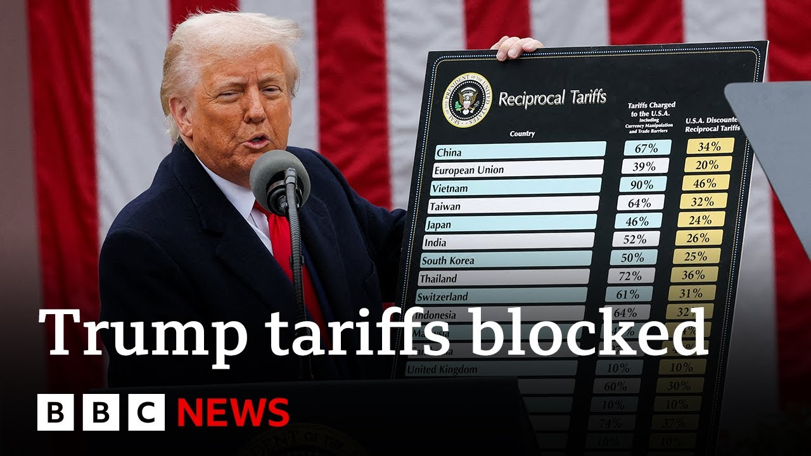

【美国贸易法院阻止特朗普全面关税政策 | BBC新闻】
Summary: A US federal court ruled that President Trump overstepped his authority by imposing global tariffs, dealing a blow to his economic policies. The administration appealed, arguing judges shouldn't decide national emergencies. Markets rallied on the news, but uncertainty remains for businesses and trade partners.
摘要： 美国联邦法院裁定特朗普总统实施全球关税超越职权，对其经济政策造成打击。政府提出上诉，称不应由非民选法官决定国家紧急状态。市场因此上涨，但企业和贸易伙伴仍面临不确定性。

⏱️ Estimated Reading Time: 14 min
A US federal court has ruled that President Donald Trump overstepped his authority by imposing global tariffs.
美国联邦法院裁定，唐纳德·特朗普总统实施全球关税超越了其职权。
If it holds, the block would represent a major blow to a key part of Mr. Trump's economic policies.
若维持原判，这一阻止将对特朗普经济政策的关键部分造成重大打击。
Well, the court sided with lawyers representing small US businesses who argued that President Trump overstepped his authority by taxing imports.
法院支持代表美国小企业的律师，他们认为特朗普总统对进口征税超越了职权。
Within minutes of the ruling, the Trump administration lodged an appeal.
裁决公布几分钟内，特朗普政府提出上诉。
A White House spokesman said it was not for unelected judges to decide how to properly address a national emergency.
白宫发言人表示，不应由非民选法官决定如何应对国家紧急状态。
With us is our business correspondent, Mark Leel.
我们的商业记者马克·李尔在现场。
Talk to us more, Mark, about what's actually happened here.
马克，请详细说明发生了什么。
Well, in the last few hours, this federal court has blunted one of Donald Trump's key economic weapons that he wanted to use to boost US manufacturing and to protect jobs.
过去几小时，联邦法院削弱了特朗普用于提振美国制造业和保护就业的关键经济手段。
Now, if you cast your mind back to Liberation Day, as Donald Trump called it on April the 2nd when he was standing up in the White House garden with that board with all those numbers on all those reciprocal tariffs, that global import tax that he put on most countries around the world and also country specific ones like the big ones on China and the EU that have been jumping around like a kid on a a pogo stick has been sending global markets into disarray.
回想4月2日特朗普所谓的“解放日”，他站在白宫花园举着写满互惠关税数字的牌子，对全球多数国家及中欧等特定国家实施的关税像跳跳球一样波动，导致全球市场混乱。
And now we've suddenly had this news excluding the tariffs on steel and aluminium and also on cars.
如今突然传来消息，除钢铁、铝和汽车关税外，其他关税将被暂停。
Everything else will be suspended in 10 days time unless Donald Trump and his team can find a way to stop them.
除非特朗普团队找到阻止方法，其余关税将在10天后暂停。
You mentioned the markets. How have they reacted?
你提到市场，它们有何反应？
Well, huge relief for the markets.
市场大幅松一口气。
They're up in Asia.
亚洲股市上涨。
US futures are up and the Footsie 100 has just opened up.5% up.
美国期货上涨，富时100指数开盘涨0.5%。
The Nikai 225 was up 1.9%.
日经225指数涨1.9%。
Hong Kong Hang Sen was up 1.1%.
香港恒生指数涨1.1%。
Also in South Korea it was up 1.8% significant because they had already been on a rally.
韩国股市涨1.8%，因已处于反弹中。
Um so stocks markets have been going up in recent days anyway.
近日股市本已上涨。
So this is definitely as a result of this news.
这显然是受该消息影响。
The dollar has been strengthening too against other safe haven currencies.
美元对其他避险货币也在走强。
So there's relief there.
因此市场感到宽慰。
But big questions now about the trading partners and the businesses uh that would have been at the end of these tariffs.
但贸易伙伴和受关税影响的企业仍面临重大问题。
So for example the ASEAN summit earlier this week there were all these maneuverings.
例如本周东盟峰会的各种博弈。
China had gone to visit the summit to decide how to deal with this big problem and they were going to create new strategic partnerships.
中国参会商讨对策，计划建立新战略伙伴关系。
The UK, for example, although it had a deal uh with President Trump, that was just about the aluminium and steel sectors and the car sectors which remain anyway.
英国虽与特朗普达成协议，但仅涉及钢铁、铝和汽车行业。
So that's a helpful deal.
这一协议有帮助。
But the UK was still subject to 10% tax on most of its goods plus businesses.
但英国大部分商品和企业仍面临10%关税。
Businesses have been waiting to work out what to do about investments.
企业一直在观望投资决策。
I'm not sure this brings them the enough clarity yet, but they would certainly prefer a world without these tariffs.
不确定这是否足够明确，但他们显然更希望没有关税。
This case against the Trump administration, ironically, was brought by small businesses that were supposed to benefit from his policy.
讽刺的是，起诉特朗普政府的是本应受益的小企业。
That's right. Importers of things like wine and bikes in America.
没错，美国葡萄酒和自行车进口商。
They went to the federal courts just saying that he had overstepped the mark, that they had concentrated more on policy rather than legality.
他们诉至联邦法院，称其越界，更关注政策而非合法性。
And that's what the court agreed.
法院认同这一点。
They'd agreed that uh while uh Congress could have passed these types of laws, the president himself didn't have that power in the way that he brought it forward.
法院认为国会本可通过此类法律，但总统无权以这种方式推行。
Mark for the moment. Thank you very much, Mark Leel.
先到这里，非常感谢马克·李尔。
Let's speak to Dr. Rebecca Harding, chief executive of the new Center for Economic Security, an organization that researches the nature of economic threats.
接下来连线经济安全中心首席执行官丽贝卡·哈丁博士，该机构研究经济威胁本质。
Dr. Harding, welcome. Thank you for joining us here on BBC News.
哈丁博士，欢迎来到BBC新闻。
How much of a setback do you believe this is for Donald Trump?
你认为这对特朗普有多大打击？
So I think what we're going to see is a huge constitutional battle now.
我们将看到一场重大宪法斗争。
So it's going to turn into a domestic battle.
这将演变成国内斗争。
It is a setback. There's absolutely no question about that.
毫无疑问这是挫折。
But um he has other tools in his armory.
但他还有其他手段。
And I don't want to um give the administration ideas, but um the idea at the moment might be that they'd use the section 232 of the trade expansion act, which is what they've got the island steel tariffs under at the moment.
目前他们可能动用《贸易扩展法》第232条，即当前钢铁关税依据。
So that act allows them to say on national security grounds these sectors are able to have tariffs imposed on them.
该条款允许以国家安全为由对特定行业加征关税。
So what he might decide to do is go down a sectoral road rather than a country road.
他可能转向行业而非国家层面的关税。
So it it is a setback.
因此这是挫折。
It will create um a conflict within the constitution because it's now as President Trump has said unelected judges against an elected president.
将引发宪法冲突，正如特朗普所说，非民选法官对抗民选总统。
It's not a good place to be because that type of constitutional uncertainty still means that America is a very uncertain place.
这种宪法不确定性意味着美国处于不稳定状态。
Where does it leave then the multiple trade talks that are underway?
这对进行中的多项贸易谈判有何影响？
So I think the main thing that's happened here is that since President Trump came to power um and since liberation day in particular the world has been dealing with this seismic shock which is the extent to which President Trump is breaking the world trade system.
自特朗普上台尤其是“解放日”以来，世界一直在应对他破坏全球贸易体系的冲击。
So the trust has disappeared.
信任已消失。
Um so countries are now saying we need to be more self-sufficient.
各国正寻求更自给自足。
We can get whatever deals we can.
尽可能达成协议。
Europe has kind of been very slow and gradual to move into um those types of trade agreements and has in a way almost been playing who blinks first with the American administration.
欧洲在推进此类协议上缓慢，几乎在与美国政府比拼谁先让步。
So I think that trust has gone and now everybody needs to step back and go maybe America needs to fight its own constitutional battles first.
信任已丧失，各方需退一步，让美国先解决其宪法斗争。
Meanwhile, we need to build our own self-sufficiency.
同时我们需建立自给自足能力。
Where does it leave countries like the UK that have actually come up with a deal with the United States?
这对已与美国达成协议的英国等国有何影响？
I mean, is there any sort of mileage in them thinking, well, we needn't bothered?
他们是否觉得白费力气？
Um, I think well, I mean, the news this morning is obviously that um that um the administration in the UK are trying to continue and accelerate those conversations with the United States because they do affect these sectoral level uh tariffs on cars and on island steel.
今早消息显示，英国政府正加速与美对话，因涉及汽车和钢铁行业关税。
So I I mean the deal is fairly flimsy.
该协议相当脆弱。
It hasn't been ratified yet.
尚未获批。
Um I do think that there is there is some mileage in keeping those conversations going, but rushing to the table too quickly when there's so much uncertainty around is is a risky thing.
保持对话有价值，但在高度不确定性下急于推进有风险。
President Trump's team have said they're going to break things. They weren't joking.
特朗普团队曾说要打破现状，并非玩笑。
And this is very very very difficult for small businesses.
这对小企业极其困难。
So the government needs to think about how to create a stable platform for the small business sector exporting to the United States.
政府需思考如何为对美出口小企业创造稳定环境。
I mean how long might this turbulence go on for? Because legal battles can take months or even years.
这种动荡会持续多久？法律斗争可能耗时数月甚至数年。
So you're absolutely right and I think I think this is the new normal.
你说得对，我认为这是新常态。
Uncertainty is the new normal.
不确定性成为新常态。
Um this is where we are at and I don't think we can predict how long it's going to take because you know we've had liberation day and then we've had not liberation day.
当前局势难以预测，因经历过“解放日”又撤销。
We've had the reciprocal tariffs suspended and now we're in this situation.
互惠关税暂停后，又陷入此局面。
It is just the case that we are going to see masses of uncertainty in the global economic system and it makes it very hard for a small business or a big business actually to decide what they're going to do and formulate strategies while they don't really know what the world one of the you know the world's largest trading nation well second largest trading nation after China while it doesn't know what what what that nation is going to do.
全球经济体系将充满不确定性，企业难以制定战略，因全球第二大贸易国美国政策不明。
So, it's very difficult for small businesses and large businesses to make long-term decisions and we just don't know.
大小企业都难做长期决策，我们无从知晓。
So, we have to deal with that uncertainty and we have to think about what our exposures are and how we're going to manage that uncertainty in the future.
必须应对不确定性，思考风险暴露及未来管理方法。
Dr. Rebecca Harding, CEO of the Center for Economic Security. Thank you very much.
经济安全中心CEO丽贝卡·哈丁博士，非常感谢。
Thank you.
谢谢。
Meanwhile, Elon Musk is leaving his position within President Trump's costcutting task force, the Department of Government Efficiency, or Doge.
同时，埃隆·马斯克将离开特朗普政府效率部（DOGE）的降成本工作组。
He said his scheduled time as a special government employee had come to an end, and he thanked Mr. Trump for the opportunity.
他表示特别政府雇员任期已满，并感谢特朗普给予的机会。
Our North America correspondent Jake Quan is in Washington with the latest developments.
北美记者杰克·权在华盛顿带来最新进展。
The billionaire Elon Musk's scheduled time as a special government employee had come to an end and this departure has been anticipated for a while because uh the special government employee are up to allowed up to 130 days in the government and his 130 days is up around this week.
亿万富翁马斯克的特别政府雇员任期结束，这一离职早有预期，因该职位最长130天，本周到期。
But this departure still feels somewhat abrupt and unceremonious.
但离职仍显突然且低调。
Elon Musk has taken to social media platform X to announce his departure and the White House quietly confirmed that they are offboarding him today.
马斯克在X平台宣布离职，白宫低调确认今日办理手续。
And this this departure comes off the back of Elon Musk's interview where he criticized President Trump's marquee spending bill which had uh added billions in deficits as it continued his tax cuts and added more spending of the defense budget.
此前马斯克在采访中批评特朗普的标志性支出法案，该法案延续减税并增加国防预算，导致赤字激增。
And as somebody whose whole job in the government was to cut the deficit, uh Elon Musk said that this bill is undermining his work.
作为政府中负责削减赤字的人，马斯克称该法案破坏其工作。
And while Mr. Mr. Trump and Elon Musk, their relationship seems uh quite solid.
尽管特朗普与马斯克关系看似稳固。
Elon Musk's and other uh officials in the White House, their relationship has been contentious according to reports.
但据报道，马斯克与白宫其他官员关系紧张。
And Mr. Mr. Musk's other business ventures like uh the Tesla uh their their business has been suffering since he went into the politics for a while.
马斯克涉足政治后，特斯拉等业务受损。
Uh the sales has dried up as his traditional customer base had come to really hate his political activity and his views.
传统客户反感其政治活动及观点，导致销量下滑。